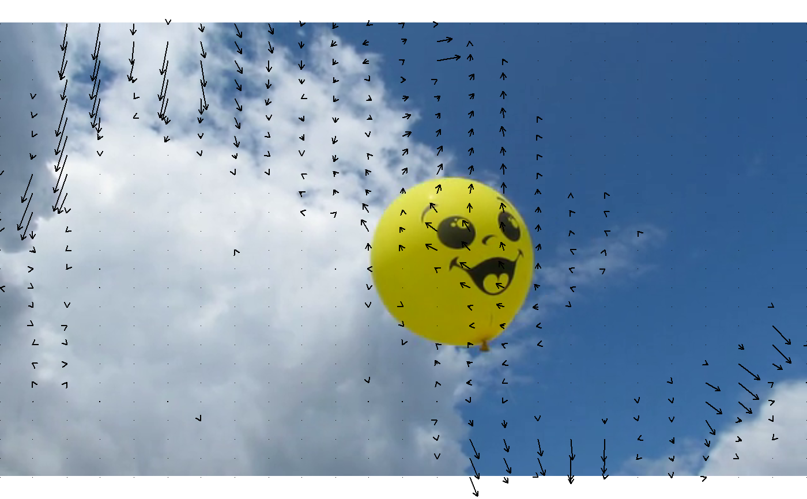

Plotting method for objects of class OF_array as produced
by the farneback function.
# S3 method for OF_array plot( x, gridsize = c(25, 25), thresh = 0, add = TRUE, arrow.ex = 0.05, xpd = TRUE, ... )
| x | An object of class |
|---|---|
| gridsize | A 2-element vector indicating the number of optical flow vectors to plot in each x-y dimension (default: c(25, 25)). Alternatively, a numeric value that will be used for both dimensions. |
| thresh | The minimal length of optical flow vectors that should be plotted (default: 0). |
| add | A logical indicating whether to plot the vector field over an existing plot (default: FALSE). |
| arrow.ex | Controls the length of the arrows. The length is in terms of the fraction of the shorter axis in the plot. So with a default of .05, 20 arrows of maximum length can line up end to end along the shorter axis. |
| xpd | If true does not clip arrows to fit inside the plot region, default is not to clip. |
| ... | Graphics arguments passed to the |
Simon Garnier, garnier@njit.edu
balloon <- video(system.file("sample_vid/Balloon.mp4", package = "Rvision")) balloon1 <- readFrame(balloon, 1) balloon2 <- readFrame(balloon, 25) of <- farneback(balloon1, balloon2) plot(balloon2)#> Warning: zero-length arrow is of indeterminate angle and so skipped#> Warning: zero-length arrow is of indeterminate angle and so skipped#> Warning: zero-length arrow is of indeterminate angle and so skipped#> Warning: zero-length arrow is of indeterminate angle and so skipped#> Warning: zero-length arrow is of indeterminate angle and so skipped#> Warning: zero-length arrow is of indeterminate angle and so skipped#> Warning: zero-length arrow is of indeterminate angle and so skipped#> Warning: zero-length arrow is of indeterminate angle and so skipped#> Warning: zero-length arrow is of indeterminate angle and so skipped#> Warning: zero-length arrow is of indeterminate angle and so skipped#> Warning: zero-length arrow is of indeterminate angle and so skipped#> Warning: zero-length arrow is of indeterminate angle and so skipped#> Warning: zero-length arrow is of indeterminate angle and so skipped#> Warning: zero-length arrow is of indeterminate angle and so skipped#> Warning: zero-length arrow is of indeterminate angle and so skipped#> Warning: zero-length arrow is of indeterminate angle and so skipped#> Warning: zero-length arrow is of indeterminate angle and so skipped#> Warning: zero-length arrow is of indeterminate angle and so skipped#> Warning: zero-length arrow is of indeterminate angle and so skipped#> Warning: zero-length arrow is of indeterminate angle and so skipped#> Warning: zero-length arrow is of indeterminate angle and so skipped#> Warning: zero-length arrow is of indeterminate angle and so skipped#> Warning: zero-length arrow is of indeterminate angle and so skipped#> Warning: zero-length arrow is of indeterminate angle and so skipped#> Warning: zero-length arrow is of indeterminate angle and so skipped#> Warning: zero-length arrow is of indeterminate angle and so skipped#> Warning: zero-length arrow is of indeterminate angle and so skipped#> Warning: zero-length arrow is of indeterminate angle and so skipped#> Warning: zero-length arrow is of indeterminate angle and so skipped#> Warning: zero-length arrow is of indeterminate angle and so skipped#> Warning: zero-length arrow is of indeterminate angle and so skipped#> Warning: zero-length arrow is of indeterminate angle and so skipped#> Warning: zero-length arrow is of indeterminate angle and so skipped#> Warning: zero-length arrow is of indeterminate angle and so skipped#> Warning: zero-length arrow is of indeterminate angle and so skipped#> Warning: zero-length arrow is of indeterminate angle and so skipped#> Warning: zero-length arrow is of indeterminate angle and so skipped#> Warning: zero-length arrow is of indeterminate angle and so skipped#> Warning: zero-length arrow is of indeterminate angle and so skipped#> Warning: zero-length arrow is of indeterminate angle and so skipped#> Warning: zero-length arrow is of indeterminate angle and so skipped#> Warning: zero-length arrow is of indeterminate angle and so skipped#> Warning: zero-length arrow is of indeterminate angle and so skipped#> Warning: zero-length arrow is of indeterminate angle and so skipped#> Warning: zero-length arrow is of indeterminate angle and so skipped#> Warning: zero-length arrow is of indeterminate angle and so skipped#> Warning: zero-length arrow is of indeterminate angle and so skipped#> Warning: zero-length arrow is of indeterminate angle and so skipped#> Warning: zero-length arrow is of indeterminate angle and so skipped#> Warning: zero-length arrow is of indeterminate angle and so skipped#> Warning: zero-length arrow is of indeterminate angle and so skipped#> Warning: zero-length arrow is of indeterminate angle and so skipped#> Warning: zero-length arrow is of indeterminate angle and so skipped#> Warning: zero-length arrow is of indeterminate angle and so skipped#> Warning: zero-length arrow is of indeterminate angle and so skipped#> Warning: zero-length arrow is of indeterminate angle and so skipped#> Warning: zero-length arrow is of indeterminate angle and so skipped#> Warning: zero-length arrow is of indeterminate angle and so skipped#> Warning: zero-length arrow is of indeterminate angle and so skipped#> Warning: zero-length arrow is of indeterminate angle and so skipped#> Warning: zero-length arrow is of indeterminate angle and so skipped#> Warning: zero-length arrow is of indeterminate angle and so skipped#> Warning: zero-length arrow is of indeterminate angle and so skipped#> Warning: zero-length arrow is of indeterminate angle and so skipped#> Warning: zero-length arrow is of indeterminate angle and so skipped#> Warning: zero-length arrow is of indeterminate angle and so skipped#> Warning: zero-length arrow is of indeterminate angle and so skipped#> Warning: zero-length arrow is of indeterminate angle and so skipped#> Warning: zero-length arrow is of indeterminate angle and so skipped#> Warning: zero-length arrow is of indeterminate angle and so skipped#> Warning: zero-length arrow is of indeterminate angle and so skipped#> Warning: zero-length arrow is of indeterminate angle and so skipped#> Warning: zero-length arrow is of indeterminate angle and so skipped#> Warning: zero-length arrow is of indeterminate angle and so skipped#> Warning: zero-length arrow is of indeterminate angle and so skipped#> Warning: zero-length arrow is of indeterminate angle and so skipped#> Warning: zero-length arrow is of indeterminate angle and so skipped#> Warning: zero-length arrow is of indeterminate angle and so skipped#> Warning: zero-length arrow is of indeterminate angle and so skipped#> Warning: zero-length arrow is of indeterminate angle and so skipped#> Warning: zero-length arrow is of indeterminate angle and so skipped#> Warning: zero-length arrow is of indeterminate angle and so skipped#> Warning: zero-length arrow is of indeterminate angle and so skipped#> Warning: zero-length arrow is of indeterminate angle and so skipped#> Warning: zero-length arrow is of indeterminate angle and so skipped#> Warning: zero-length arrow is of indeterminate angle and so skipped#> Warning: zero-length arrow is of indeterminate angle and so skipped#> Warning: zero-length arrow is of indeterminate angle and so skipped#> Warning: zero-length arrow is of indeterminate angle and so skipped#> Warning: zero-length arrow is of indeterminate angle and so skipped#> Warning: zero-length arrow is of indeterminate angle and so skipped#> Warning: zero-length arrow is of indeterminate angle and so skipped#> Warning: zero-length arrow is of indeterminate angle and so skipped#> Warning: zero-length arrow is of indeterminate angle and so skipped#> Warning: zero-length arrow is of indeterminate angle and so skipped#> Warning: zero-length arrow is of indeterminate angle and so skipped#> Warning: zero-length arrow is of indeterminate angle and so skipped#> Warning: zero-length arrow is of indeterminate angle and so skipped#> Warning: zero-length arrow is of indeterminate angle and so skipped#> Warning: zero-length arrow is of indeterminate angle and so skipped#> Warning: zero-length arrow is of indeterminate angle and so skipped#> Warning: zero-length arrow is of indeterminate angle and so skipped#> Warning: zero-length arrow is of indeterminate angle and so skipped#> Warning: zero-length arrow is of indeterminate angle and so skipped#> Warning: zero-length arrow is of indeterminate angle and so skipped#> Warning: zero-length arrow is of indeterminate angle and so skipped#> Warning: zero-length arrow is of indeterminate angle and so skipped#> Warning: zero-length arrow is of indeterminate angle and so skipped#> Warning: zero-length arrow is of indeterminate angle and so skipped#> Warning: zero-length arrow is of indeterminate angle and so skipped#> Warning: zero-length arrow is of indeterminate angle and so skipped#> Warning: zero-length arrow is of indeterminate angle and so skipped#> Warning: zero-length arrow is of indeterminate angle and so skipped#> Warning: zero-length arrow is of indeterminate angle and so skipped#> Warning: zero-length arrow is of indeterminate angle and so skipped#> Warning: zero-length arrow is of indeterminate angle and so skipped#> Warning: zero-length arrow is of indeterminate angle and so skipped#> Warning: zero-length arrow is of indeterminate angle and so skipped#> Warning: zero-length arrow is of indeterminate angle and so skipped#> Warning: zero-length arrow is of indeterminate angle and so skipped#> Warning: zero-length arrow is of indeterminate angle and so skipped#> Warning: zero-length arrow is of indeterminate angle and so skipped#> Warning: zero-length arrow is of indeterminate angle and so skipped#> Warning: zero-length arrow is of indeterminate angle and so skipped#> Warning: zero-length arrow is of indeterminate angle and so skipped#> Warning: zero-length arrow is of indeterminate angle and so skipped#> Warning: zero-length arrow is of indeterminate angle and so skipped#> Warning: zero-length arrow is of indeterminate angle and so skipped#> Warning: zero-length arrow is of indeterminate angle and so skipped#> Warning: zero-length arrow is of indeterminate angle and so skipped#> Warning: zero-length arrow is of indeterminate angle and so skipped#> Warning: zero-length arrow is of indeterminate angle and so skipped#> Warning: zero-length arrow is of indeterminate angle and so skipped#> Warning: zero-length arrow is of indeterminate angle and so skipped#> Warning: zero-length arrow is of indeterminate angle and so skipped#> Warning: zero-length arrow is of indeterminate angle and so skipped#> Warning: zero-length arrow is of indeterminate angle and so skipped#> Warning: zero-length arrow is of indeterminate angle and so skipped#> Warning: zero-length arrow is of indeterminate angle and so skipped#> Warning: zero-length arrow is of indeterminate angle and so skipped#> Warning: zero-length arrow is of indeterminate angle and so skipped#> Warning: zero-length arrow is of indeterminate angle and so skipped#> Warning: zero-length arrow is of indeterminate angle and so skipped#> Warning: zero-length arrow is of indeterminate angle and so skipped#> Warning: zero-length arrow is of indeterminate angle and so skipped#> Warning: zero-length arrow is of indeterminate angle and so skipped#> Warning: zero-length arrow is of indeterminate angle and so skipped#> Warning: zero-length arrow is of indeterminate angle and so skipped#> Warning: zero-length arrow is of indeterminate angle and so skipped#> Warning: zero-length arrow is of indeterminate angle and so skipped#> Warning: zero-length arrow is of indeterminate angle and so skipped#> Warning: zero-length arrow is of indeterminate angle and so skipped#> Warning: zero-length arrow is of indeterminate angle and so skipped#> Warning: zero-length arrow is of indeterminate angle and so skipped#> Warning: zero-length arrow is of indeterminate angle and so skipped#> Warning: zero-length arrow is of indeterminate angle and so skipped#> Warning: zero-length arrow is of indeterminate angle and so skipped#> Warning: zero-length arrow is of indeterminate angle and so skipped#> Warning: zero-length arrow is of indeterminate angle and so skipped#> Warning: zero-length arrow is of indeterminate angle and so skipped#> Warning: zero-length arrow is of indeterminate angle and so skipped#> Warning: zero-length arrow is of indeterminate angle and so skipped#> Warning: zero-length arrow is of indeterminate angle and so skipped#> Warning: zero-length arrow is of indeterminate angle and so skipped#> Warning: zero-length arrow is of indeterminate angle and so skipped#> Warning: zero-length arrow is of indeterminate angle and so skipped#> Warning: zero-length arrow is of indeterminate angle and so skipped#> Warning: zero-length arrow is of indeterminate angle and so skipped#> Warning: zero-length arrow is of indeterminate angle and so skipped#> Warning: zero-length arrow is of indeterminate angle and so skipped#> Warning: zero-length arrow is of indeterminate angle and so skipped#> Warning: zero-length arrow is of indeterminate angle and so skipped#> Warning: zero-length arrow is of indeterminate angle and so skipped#> Warning: zero-length arrow is of indeterminate angle and so skipped#> Warning: zero-length arrow is of indeterminate angle and so skipped#> Warning: zero-length arrow is of indeterminate angle and so skipped#> Warning: zero-length arrow is of indeterminate angle and so skipped#> Warning: zero-length arrow is of indeterminate angle and so skipped#> Warning: zero-length arrow is of indeterminate angle and so skipped#> Warning: zero-length arrow is of indeterminate angle and so skipped#> Warning: zero-length arrow is of indeterminate angle and so skipped#> Warning: zero-length arrow is of indeterminate angle and so skipped#> Warning: zero-length arrow is of indeterminate angle and so skipped#> Warning: zero-length arrow is of indeterminate angle and so skipped#> Warning: zero-length arrow is of indeterminate angle and so skipped#> Warning: zero-length arrow is of indeterminate angle and so skipped#> Warning: zero-length arrow is of indeterminate angle and so skipped#> Warning: zero-length arrow is of indeterminate angle and so skipped#> Warning: zero-length arrow is of indeterminate angle and so skipped#> Warning: zero-length arrow is of indeterminate angle and so skipped#> Warning: zero-length arrow is of indeterminate angle and so skipped#> Warning: zero-length arrow is of indeterminate angle and so skipped#> Warning: zero-length arrow is of indeterminate angle and so skipped#> Warning: zero-length arrow is of indeterminate angle and so skipped#> Warning: zero-length arrow is of indeterminate angle and so skipped#> Warning: zero-length arrow is of indeterminate angle and so skipped#> Warning: zero-length arrow is of indeterminate angle and so skipped#> Warning: zero-length arrow is of indeterminate angle and so skipped#> Warning: zero-length arrow is of indeterminate angle and so skipped#> Warning: zero-length arrow is of indeterminate angle and so skipped#> Warning: zero-length arrow is of indeterminate angle and so skipped#> Warning: zero-length arrow is of indeterminate angle and so skipped#> Warning: zero-length arrow is of indeterminate angle and so skipped#> Warning: zero-length arrow is of indeterminate angle and so skipped#> Warning: zero-length arrow is of indeterminate angle and so skipped#> Warning: zero-length arrow is of indeterminate angle and so skipped#> Warning: zero-length arrow is of indeterminate angle and so skipped#> Warning: zero-length arrow is of indeterminate angle and so skipped#> Warning: zero-length arrow is of indeterminate angle and so skipped#> Warning: zero-length arrow is of indeterminate angle and so skipped#> Warning: zero-length arrow is of indeterminate angle and so skipped#> Warning: zero-length arrow is of indeterminate angle and so skipped#> Warning: zero-length arrow is of indeterminate angle and so skipped#> Warning: zero-length arrow is of indeterminate angle and so skipped#> Warning: zero-length arrow is of indeterminate angle and so skipped#> Warning: zero-length arrow is of indeterminate angle and so skipped#> Warning: zero-length arrow is of indeterminate angle and so skipped#> Warning: zero-length arrow is of indeterminate angle and so skipped#> Warning: zero-length arrow is of indeterminate angle and so skipped#> Warning: zero-length arrow is of indeterminate angle and so skipped#> Warning: zero-length arrow is of indeterminate angle and so skipped#> Warning: zero-length arrow is of indeterminate angle and so skipped#> Warning: zero-length arrow is of indeterminate angle and so skipped#> Warning: zero-length arrow is of indeterminate angle and so skipped#> Warning: zero-length arrow is of indeterminate angle and so skipped#> Warning: zero-length arrow is of indeterminate angle and so skipped#> Warning: zero-length arrow is of indeterminate angle and so skipped#> Warning: zero-length arrow is of indeterminate angle and so skipped#> Warning: zero-length arrow is of indeterminate angle and so skipped#> Warning: zero-length arrow is of indeterminate angle and so skipped#> Warning: zero-length arrow is of indeterminate angle and so skipped#> Warning: zero-length arrow is of indeterminate angle and so skipped#> Warning: zero-length arrow is of indeterminate angle and so skipped#> Warning: zero-length arrow is of indeterminate angle and so skipped#> Warning: zero-length arrow is of indeterminate angle and so skipped#> Warning: zero-length arrow is of indeterminate angle and so skipped#> Warning: zero-length arrow is of indeterminate angle and so skipped#> Warning: zero-length arrow is of indeterminate angle and so skipped#> Warning: zero-length arrow is of indeterminate angle and so skipped#> Warning: zero-length arrow is of indeterminate angle and so skipped#> Warning: zero-length arrow is of indeterminate angle and so skipped#> Warning: zero-length arrow is of indeterminate angle and so skipped#> Warning: zero-length arrow is of indeterminate angle and so skipped#> Warning: zero-length arrow is of indeterminate angle and so skipped#> Warning: zero-length arrow is of indeterminate angle and so skipped#> Warning: zero-length arrow is of indeterminate angle and so skipped#> Warning: zero-length arrow is of indeterminate angle and so skipped#> Warning: zero-length arrow is of indeterminate angle and so skipped#> Warning: zero-length arrow is of indeterminate angle and so skipped#> Warning: zero-length arrow is of indeterminate angle and so skipped#> Warning: zero-length arrow is of indeterminate angle and so skipped#> Warning: zero-length arrow is of indeterminate angle and so skipped#> Warning: zero-length arrow is of indeterminate angle and so skipped#> Warning: zero-length arrow is of indeterminate angle and so skipped#> Warning: zero-length arrow is of indeterminate angle and so skipped#> Warning: zero-length arrow is of indeterminate angle and so skipped#> Warning: zero-length arrow is of indeterminate angle and so skipped#> Warning: zero-length arrow is of indeterminate angle and so skipped#> Warning: zero-length arrow is of indeterminate angle and so skipped#> Warning: zero-length arrow is of indeterminate angle and so skipped#> Warning: zero-length arrow is of indeterminate angle and so skipped#> Warning: zero-length arrow is of indeterminate angle and so skipped#> Warning: zero-length arrow is of indeterminate angle and so skipped#> Warning: zero-length arrow is of indeterminate angle and so skipped#> Warning: zero-length arrow is of indeterminate angle and so skipped#> Warning: zero-length arrow is of indeterminate angle and so skipped#> Warning: zero-length arrow is of indeterminate angle and so skipped#> Warning: zero-length arrow is of indeterminate angle and so skipped#> Warning: zero-length arrow is of indeterminate angle and so skipped#> Warning: zero-length arrow is of indeterminate angle and so skipped#> Warning: zero-length arrow is of indeterminate angle and so skipped#> Warning: zero-length arrow is of indeterminate angle and so skipped#> Warning: zero-length arrow is of indeterminate angle and so skipped#> Warning: zero-length arrow is of indeterminate angle and so skipped#> Warning: zero-length arrow is of indeterminate angle and so skipped#> Warning: zero-length arrow is of indeterminate angle and so skipped#> Warning: zero-length arrow is of indeterminate angle and so skipped#> Warning: zero-length arrow is of indeterminate angle and so skipped#> Warning: zero-length arrow is of indeterminate angle and so skipped#> Warning: zero-length arrow is of indeterminate angle and so skipped#> Warning: zero-length arrow is of indeterminate angle and so skipped#> Warning: zero-length arrow is of indeterminate angle and so skipped#> Warning: zero-length arrow is of indeterminate angle and so skipped#> Warning: zero-length arrow is of indeterminate angle and so skipped#> Warning: zero-length arrow is of indeterminate angle and so skipped#> Warning: zero-length arrow is of indeterminate angle and so skipped#> Warning: zero-length arrow is of indeterminate angle and so skipped#> Warning: zero-length arrow is of indeterminate angle and so skipped#> Warning: zero-length arrow is of indeterminate angle and so skipped#> Warning: zero-length arrow is of indeterminate angle and so skipped#> Warning: zero-length arrow is of indeterminate angle and so skipped#> Warning: zero-length arrow is of indeterminate angle and so skipped#> Warning: zero-length arrow is of indeterminate angle and so skipped#> Warning: zero-length arrow is of indeterminate angle and so skipped#> Warning: zero-length arrow is of indeterminate angle and so skipped#> Warning: zero-length arrow is of indeterminate angle and so skipped#> Warning: zero-length arrow is of indeterminate angle and so skipped#> Warning: zero-length arrow is of indeterminate angle and so skipped#> Warning: zero-length arrow is of indeterminate angle and so skipped#> Warning: zero-length arrow is of indeterminate angle and so skipped#> Warning: zero-length arrow is of indeterminate angle and so skipped#> Warning: zero-length arrow is of indeterminate angle and so skipped#> Warning: zero-length arrow is of indeterminate angle and so skipped#> Warning: zero-length arrow is of indeterminate angle and so skipped#> Warning: zero-length arrow is of indeterminate angle and so skipped#> Warning: zero-length arrow is of indeterminate angle and so skipped#> Warning: zero-length arrow is of indeterminate angle and so skipped#> Warning: zero-length arrow is of indeterminate angle and so skipped#> Warning: zero-length arrow is of indeterminate angle and so skipped#> Warning: zero-length arrow is of indeterminate angle and so skipped#> Warning: zero-length arrow is of indeterminate angle and so skipped#> Warning: zero-length arrow is of indeterminate angle and so skipped#> Warning: zero-length arrow is of indeterminate angle and so skipped#> Warning: zero-length arrow is of indeterminate angle and so skipped#> Warning: zero-length arrow is of indeterminate angle and so skipped#> Warning: zero-length arrow is of indeterminate angle and so skipped#> Warning: zero-length arrow is of indeterminate angle and so skipped#> Warning: zero-length arrow is of indeterminate angle and so skipped#> Warning: zero-length arrow is of indeterminate angle and so skipped#> Warning: zero-length arrow is of indeterminate angle and so skipped#> Warning: zero-length arrow is of indeterminate angle and so skipped#> Warning: zero-length arrow is of indeterminate angle and so skipped#> Warning: zero-length arrow is of indeterminate angle and so skipped#> Warning: zero-length arrow is of indeterminate angle and so skipped#> Warning: zero-length arrow is of indeterminate angle and so skipped#> Warning: zero-length arrow is of indeterminate angle and so skipped#> Warning: zero-length arrow is of indeterminate angle and so skipped#> Warning: zero-length arrow is of indeterminate angle and so skipped#> Warning: zero-length arrow is of indeterminate angle and so skipped#> Warning: zero-length arrow is of indeterminate angle and so skipped#> Warning: zero-length arrow is of indeterminate angle and so skipped#> Warning: zero-length arrow is of indeterminate angle and so skipped#> Warning: zero-length arrow is of indeterminate angle and so skipped#> Warning: zero-length arrow is of indeterminate angle and so skipped#> Warning: zero-length arrow is of indeterminate angle and so skipped#> Warning: zero-length arrow is of indeterminate angle and so skipped#> Warning: zero-length arrow is of indeterminate angle and so skipped#> Warning: zero-length arrow is of indeterminate angle and so skipped#> Warning: zero-length arrow is of indeterminate angle and so skipped#> Warning: zero-length arrow is of indeterminate angle and so skipped#> Warning: zero-length arrow is of indeterminate angle and so skipped#> Warning: zero-length arrow is of indeterminate angle and so skipped#> Warning: zero-length arrow is of indeterminate angle and so skipped#> Warning: zero-length arrow is of indeterminate angle and so skipped#> Warning: zero-length arrow is of indeterminate angle and so skipped#> Warning: zero-length arrow is of indeterminate angle and so skipped